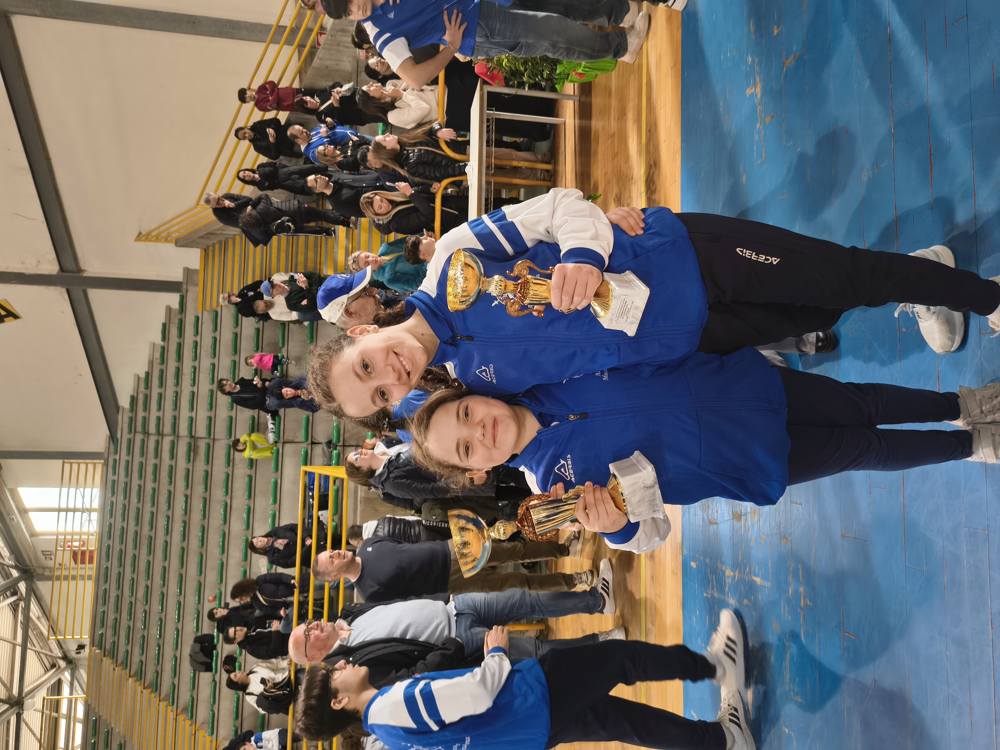

Ottimi Risultati alle Qualificazioni Regionali
Pubblicato il 15 Febbraio 2026

I nostri atleti hanno ottenuto importanti piazzamenti durante l'ultima prova di qualificazione regionale per i Campionati Italiani. Sia nella spada che nel fioretto, il gruppo si è distinto per determinazione e tenuta tattica in pedana.
Lo staff tecnico si dichiara estremamente soddisfatto delle prestazioni individuali e del lavoro di squadra svolto in sala.